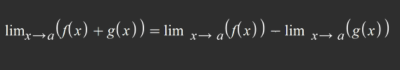
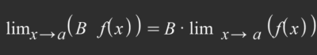

En álgebra lineal, las ecuaciones lineales son expresiones matemáticas que
involucran variables lineales (variables elevadas a la primera potencia) y
coeficientes constantes, y se igualan a una constante. El objetivo es encontrar
los valores de las variables que hacen que la ecuación sea verdadera, lo que a
menudo se hace resolviendo para las variables desconocidas. fundamentales
para modelar y resolver problemas en diversas disciplinas, como la física,
la ingeniería y la economía.
Un operador es lineal si cumple las dos cerraduras:
cerradura Suma:

Cerradura Mulptiplicacion por eslacar:

Un sistema de ecuaciones es un conjunto de dos o más ecuaciones algebraicas que
involucran variables desconocidas y se resuelven juntas para encontrar los valores
de esas variables que hacen que todas las ecuaciones sean verdaderas al mismo tiempo.
Estos sistemas se utilizan para modelar y resolver una variedad de problemas
matemáticos y del mundo real.
Un sistema de ecuaciones tiene solución cuando existe al menos un conjunto de valores para
las variables desconocidas que satisface todas las ecuaciones del sistema de manera
simultánea. En otras palabras, las soluciones son los valores que hacen que todas las
ecuaciones sean verdaderas al mismo tiempo.
El sistema tiene una única solución, lo que significa que existe un solo conjunto de valores
para las variables que satisface todas las ecuaciones.
2x+3y=7
4x-5y=2
6x-2y=9
Un sistema de ecuaciones con infinitas soluciones se puede lograr creando un conjunto
de ecuaciones lineales que sean linealmente dependientes.
Esto significa que las ecuaciones son múltiplos unas de otras o son equivalentes,
lo que conduce a un sistema con un número infinito de soluciones.
2x-y=1
4x-2y=2
6x-3y=3
cuando dos ecuaciones en un sistema tienen la misma pendiente y no son idénticas, el sistema
puede no tener solución. Esto se debe a que las dos rectas son paralelas y nunca se cruzan,
lo que significa que no hay ningún punto que satisfaga ambas ecuaciones al mismo tiempo.
2x+y=3
2x+y=4
Existe 4 metodos para solucionar un sistema:
•Igualacion
•Sustitucion
•Reduccion
•Determinantes
•Selecciona dos ecuaciones del sistema y despeja la misma variable en ambas ecuaciones. Esto
implica que se debe obtener la variable sola en un lado de la ecuacion y los terminos constantes
en el otro lado.
•Iguala las expresiones obtenidas en el paso anterior. Esto significa que se igualan las dos
expresiones que representan la misma variable.
•Resuelve la ecuación resultante para encontrar el valor de la variable despejada.
•Sustituye el valor obtenido en cualquiera de las ecuaciones originales para encontrar
el valor de la otra variable.
Verifica la solución encontrada sustituyendo los valores de las variables en todas las
ecuaciones originales. Si todas las ecuaciones se cumplen, entonces has encontrado la
solución del sistema de ecuaciones.
•Selecciona una de las ecuaciones del sistema y despeja una variable en términos de las otras
variables. Esto implica que se debe obtener la variable sola en un lado de la ecuación y los
términos constantes y las otras variables en el otro lado.
•Sustituye la expresión obtenida en el paso anterior en todas las demás ecuaciones del sistema
en lugar de la variable correspondiente. Esto crea un nuevo sistema de ecuaciones con una
variable menos.
•Resuelve el nuevo sistema de ecuaciones resultante. Puedes utilizar otros métodos como
sustitución, reducción o determinantes para resolver este nuevo sistema.
•Sustituye los valores obtenidos en el paso anterior en la expresión despejada de la variable
en el primer paso. Esto te dará el valor de la variable despejada.
•Sustituye el valor encontrado en el paso anterior en cualquiera de las ecuaciones originales
para encontrar el valor de la otra variable.
•Verifica la solución encontrada sustituyendo los valores de las variables en todas las
ecuaciones originales. Si todas las ecuaciones se cumplen, entonces has encontrado la solución
del sistema de ecuaciones.
•Encontramos el determinante del sistema por cualquiera de los metodos.
•Remplazamos los coeficientes de x por el vector solucion y sacamos el determinante de nuevo y
obtenemos el determinante de x.
•Lo mismo del paso anterior pero con los coeficientes de y.
•Dividimos el determinante de x por el determinante del sistema y asi obtenemos el valor de x,
hacemos lo mismo en el caso de y.
•Selecciona dos ecuaciones del sistema y elige una variable para eliminar. Multiplica una o
ambas ecuaciones por un número adecuado para que los coeficientes de esa variable sean iguales
en ambas ecuaciones pero con signos opuestos.
•Suma o resta las dos ecuaciones obtenidas en el paso anterior para eliminar la variable elegida.
Esto creará una nueva ecuación con una variable menos.
•Repite los pasos 2 y 3 con otras dos ecuaciones del sistema, eligiendo otra variable para eliminar.
•Continúa eliminando variables de esta manera hasta que quede una sola ecuación con una sola variable.
•Resuelve la ecuación resultante para encontrar el valor de la variable.
•Sustituye el valor encontrado en cualquiera de las ecuaciones originales para encontrar el valor de
la otra variable.